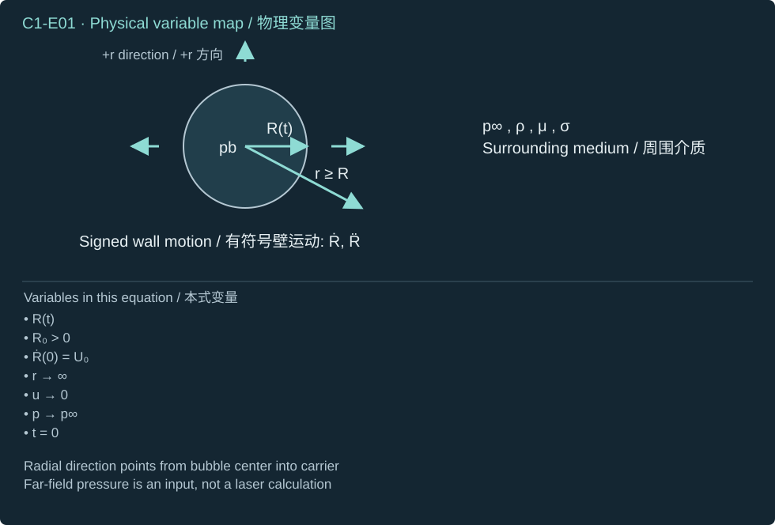
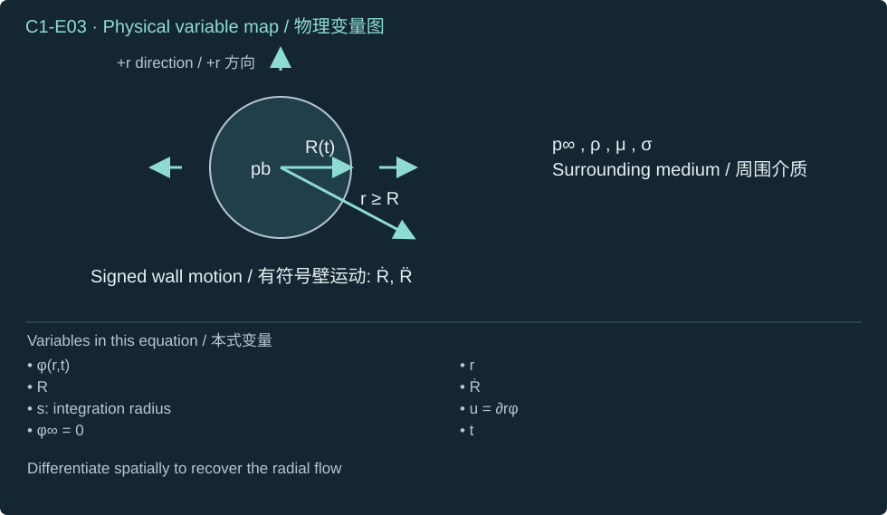
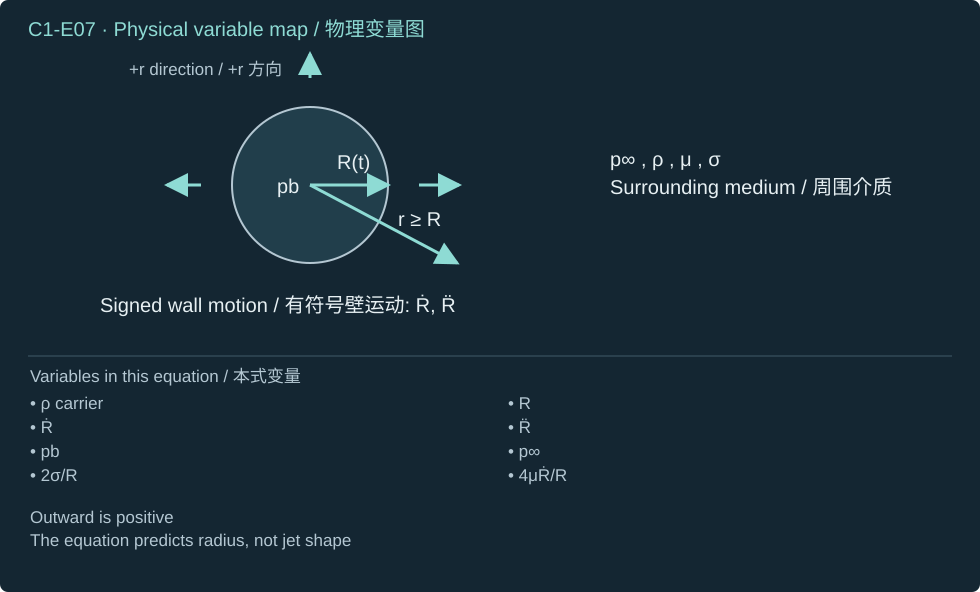
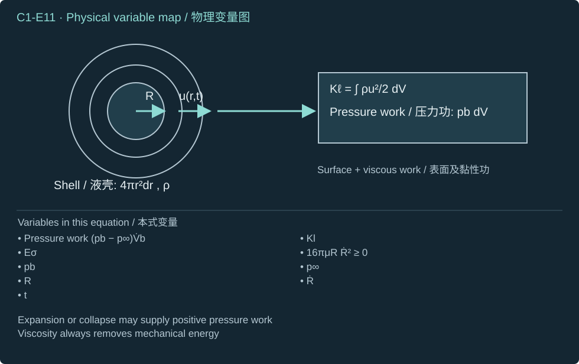
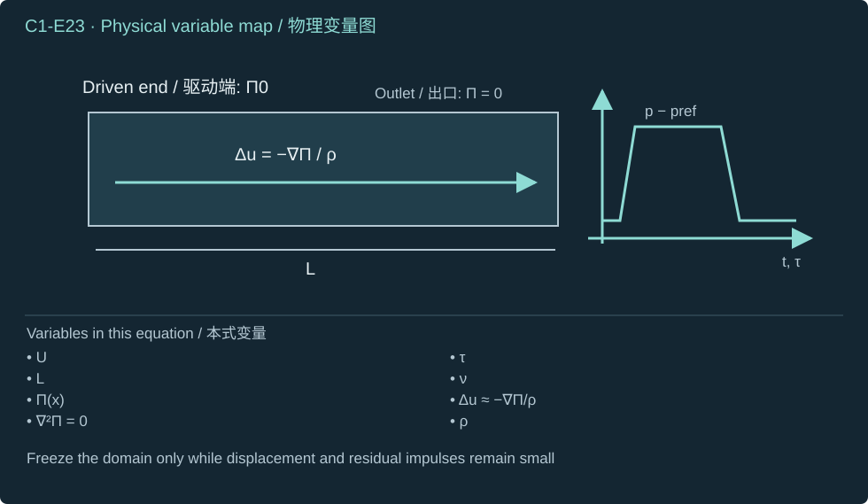
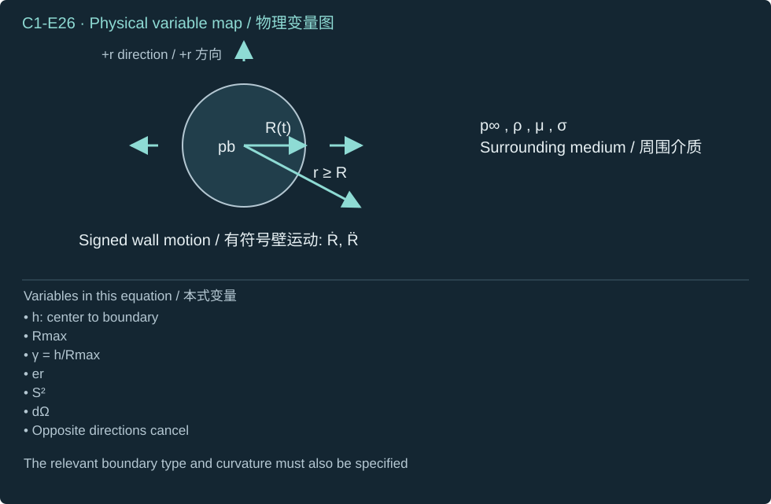
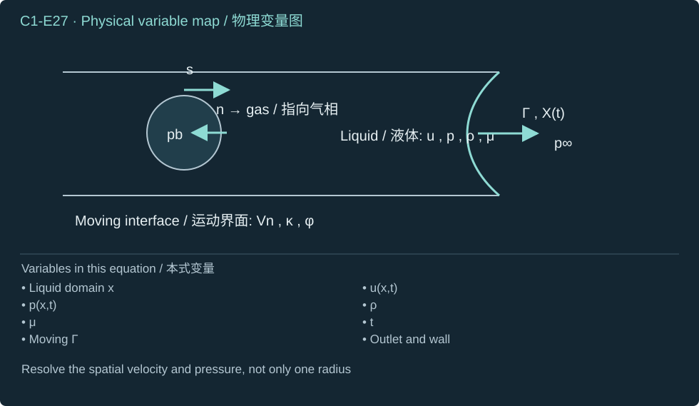

How does cavity pressure accelerate liquid, and why does a directional jet require asymmetry?
腔体压力如何加速液体？为什么形成定向射流必须有不对称性？
Derive radial dynamics and energy, solve the Rayleigh integral, and close the spatial problem that turns liquid motion into a jet.
推导径向动力学与能量，解出瑞利积分，并闭合把液体运动变为射流的空间问题。
Awaiting your explanations / 待您解释
What this chapter enables
本章学习目标
Classify the cavity and liquid force path before using a jet model.
使用射流模型之前，辨认空腔与液体传力路径。
Reconstruct Rayleigh–Plesset with the correct fixed-position potential derivative.
使用正确的固定位置速度势导数，重建 Rayleigh–Plesset 方程。
Derive pressure-work conservation and the beta-function collapse coefficient.
推导压力功守恒与贝塔函数塌缩系数。
Explain why impulse, boundaries and evolving interface shape are needed for a directional jet.
解释定向射流为何需要冲量、边界与演化界面形状。
Prerequisite. Introductory mechanics and calculus; no prior cavitation training. Pressure input is declared here and derived thermodynamically in Chapter 2.
先修知识。 基础力学与微积分；不要求空化背景。本章声明压力输入，第二章从热力学推导该输入。
1.1 Identify the actuator before choosing an equation
1.1 先辨认执行机制，再选择方程
Our objective is to establish the mechanical part of the transfer chain: how a cavity accelerates its surrounding liquid, how boundaries select a direction, and what extra information is needed to predict a usable jet. A PFC droplet begins as a liquid inclusion with a finite inventory. A bubble is a cavity containing vapor, permanent gas, or both. Their radii describe different physical objects; a bubble radius is not a measure of the remaining PFC mass.
Pressure-driven cavitation and thermally initiated vaporization can both produce an inertially moving cavity. Here the phrase laser-induced cavitation includes heating, activation, growth, collapse and possible jetting, while the activation mechanism must be identified separately. Chapter 2 supplies absorption, heat transfer, nucleation and finite phase inventory. This chapter first treats internal pressure as a supplied input, so the mechanical derivation can be reconstructed without inventing an optical efficiency.
The growing cavity displaces carrier toward an outlet or meniscus; the emitted jet is outside the cavity.
增长空腔将载液推向出口或弯月面；喷出射流位于空腔之外。
Track cavity growth and the outgoing liquid together.
同时追踪空腔增长与向外喷出的液体。
Collapse-driven re-entrant jet
塌缩驱动的再入射流
An asymmetric liquid interface penetrates the collapsing cavity and can strike its opposite side or a wall.
非对称液体界面穿入塌缩空腔，可撞击另一侧界面或壁面。
Show penetration into the cavity; do not rename it an external transfer jet.
观测射流穿入空腔；不能直接把它称为外部转印射流。
Sealed-cavity inflation
密闭空腔膨胀
Pressure deforms an intact membrane or stamp; liquid need not cross a gap.
压力使完整膜或印章变形；液体不必跨越间隙。
Locate the closed boundary and the transmitted deformation.
确定封闭边界及其传递的变形。
Liquid-bridge stretching
液桥拉伸
A moving solid pulls a filament; the filament need not originate as a cavitationjet.
运动固体拉出液丝；液丝不一定起源于空化射流。
Establish which moved first: the liquid tip or the solid.
辨明最先运动的是液体前端还是固体。
A bright cavity and a detached payload alone cannot distinguish these mechanisms. The required observations are the cavity boundary, liquid trajectories, outlet, receiving surface and event sequence. The capillary-meniscus study and asymmetric-collapse study cited here address different geometries; their findings are useful only after the boundary conditions are matched. [R3][R4]
The first model is one spherical cavity in an infinite, incompressible Newtonian carrier. The center is fixed; the radial coordinate increases from the center into the liquid. Positive wall velocity means expansion. Density, viscosity and effective surface tension are constant. Gravity, bulk liquid vorticity, phase-transfer velocity slip and gas-side viscous stress are omitted. The bubble pressure is uniform in space but may depend on time. This is a single transient model; no periodic acoustic forcing is assumed.
Independent time coordinate; the initial instant is t = 0.
独立时间坐标；初始时刻取 t = 0。
r
Liquid radial coordinate
液体径向坐标
m
Distance from the fixed cavity center to an observation point in the carrier; r ≥ R.
从固定空腔中心到载液中观察点的距离；r ≥ R。
R
Instantaneous cavity radius
瞬时空腔半径
m
Locates the moving liquid–bubble interface; it is not the initial PFC-core radius.
定位运动的液体—气泡界面；并非初始 PFC 核半径。
R˙
Wall radial velocity
壁面径向速度
m s⁻¹
First time derivative of R; positive means expansion and negative means collapse.
R 对时间的一阶导数；正值表示膨胀，负值表示塌缩。
R¨
Wall radial acceleration
壁面径向加速度
m s⁻²
Second time derivative of R; its sign describes velocity change, not motion direction alone.
R 对时间的二阶导数；其符号描述速度变化，不能单独代表运动方向。
R0
Prescribed initial cavity radius
给定初始空腔半径
m
Positive initial value R(0); a state input to the mechanical model.
正的初始值 R(0)；是力学模型的状态输入。
U0
Initial wall velocity
初始壁面速度
m s⁻¹
Prescribed value of the first time derivative of R at the initial instant.
初始时刻给定的 R 的一阶时间导数。
ρ
Carrier mass density
载液质量密度
kg m⁻³
Sets surrounding-liquid inertia; it must not be replaced by PFC vapor density.
决定周围液体的惯性；不能替换成 PFC 蒸气密度。
μ
Carrier dynamic viscosity
载液动力黏度
Pa s
Newtonian stress coefficient; viscous resistance dissipates energy in either motion direction.
牛顿流体应力系数；黏性阻力在两个运动方向均耗散能量。
σ
Effective bubble–carrier surface tension
有效气泡—载液表面张力
N m⁻¹
Belongs to the specified interface; contributes the spherical capillary pressure 2σ/R.
属于指定界面；产生球形毛细压力 2σ/R。
pb
Uniform bubble absolute pressure
均匀气泡绝对压力
Pa
Pressure on the cavity side of the interface; its history is supplied here.
界面空腔侧压力；本章将其时间历程作为输入。
pl
Adjacent-liquid absolute pressure
邻近液体绝对压力
Pa
Liquid-side pressure at the moving interface; stress balance relates it to bubble pressure.
运动界面的液体侧压力；通过应力平衡与泡内压力关联。
p∞
Far-field absolute pressure
远场绝对压力
Pa
Pressure prescribed far from the cavity; pressure differences drive acceleration.
远离空腔处的给定压力；加速度由压力差驱动。
p
Liquid pressure field
液体压力场
Pa
Pressure at a general liquid observation point, evaluated at the stated position and time.
指定位置与时间的普通液体观察点压力。
u
Scalar radial carrier velocity
标量载液径向速度
m s⁻¹
Positive outward from the center; differs from the spatial velocity vector below.
从中心向外取正；与下文空间速度矢量区别使用。
C(t)
Radial volume-flux factor
径向体积流量因子
m³ s⁻¹
Continuity makes r²u independent of r; this function is not a material constant.
连续性使 r²u 与 r 无关；该函数并非材料常数。
ϕ
Velocity potential
速度势
m² s⁻¹
Its spatial derivative gives radial velocity; the reference value is fixed at infinity.
其空间导数给出径向速度；参考值固定在无穷远。
Vb
Cavity volume
空腔体积
m³
Geometric volume enclosed by the bubble boundary; pressure work uses its rate of change.
气泡边界围成的几何体积；压力功使用其变化率。
Kl
Carrier kinetic energy
载液动能
J
Integrates motion throughout the exterior liquid, rather than mass inside the bubble.
对外部液体的运动进行积分，而不是计算气泡内部质量。
Eσ
Interfacial energy
界面能
J
Surface tension multiplied by spherical interface area under the constant-tension assumption.
在张力恒定假设下，等于表面张力乘球形界面面积。
Rmax
Radius at the start of ideal collapse
理想塌缩开始时的半径
m
Maximum cavity radius with zero initial wall velocity in the Rayleigh control.
Rayleigh 对照中壁面初始速度为零时的最大空腔半径。
pv
Stipulated constant vapor pressure
假定恒定蒸气压
Pa
Ideal-collapse internal-pressure input; real thermal or finite-inventory evolution may change it.
理想塌缩的内部压力输入；实际热过程或有限存量变化可能改变它。
Δpc
Positive ideal-collapse pressure difference
正的理想塌缩压差
Pa
Defined as far-field pressure minus the stipulated vapor pressure in this control.
在该对照中定义为远场压力减去假定蒸气压。
tc
Ideal collapse time
理想塌缩时间
s
Time from the initial maximum radius to the excluded zero-radius limit of the ideal model.
从初始最大半径到理想模型所排除的零半径极限的时间。
EB
Displaced-volume pressure-work scale
排开体积的压力功尺度
J
Uses the stated pressure difference and initial cavity volume; not an assigned jet energy.
由所声明压差与初始空腔体积构成；并非预设的射流能量。
x
Spatial position vector
空间位置矢量
m
Locates a point in the nonspherical liquid domain.
定位非球形液体域中的一点。
u
Spatial carrier velocity vector
空间载液速度矢量
m s⁻¹
Contains direction and spatial variation needed for a jet; scalar wall speed is insufficient.
包含射流所需的方向与空间变化；标量壁面速度不足以替代它。
Π
Pressure impulse per unit area
单位面积压力冲量
Pa s
Time integral of the specified excess pressure; its gradient changes liquid velocity.
指定超压对时间的积分；其梯度改变液体速度。
Γ
Moving liquid–gas interface
运动液—气界面
—
Geometric surface, not fracture energy; its position evolves with the interface condition.
几何曲面，不是断裂能；其位置按界面条件演化。
n
Liquid-to-gas unit normal
液体指向气体的单位法向
1
Fixes traction and signed-curvature conventions; reversing it changes those signs.
确定牵引与带符号曲率约定；反转法向会改变相关符号。
κ
Signed sum of principal curvatures
带符号的两主曲率之和
m⁻¹
For the stated liquid-to-gas normal on a spherical cavity, κ = −2/R.
对于所声明的球形空腔液体指向气体法向，κ = −2/R。
Ordinary superscripts are powers, bold symbols are vectors or tensors, and π is the dimensionless circle constant. Spatial gradient, divergence and Laplacian have their usual Cartesian meanings; partial time derivatives hold position fixed. Every display repeats its local definitions, including any new integration variables. The supplied initial radius is positive, which permits division by radius until the model reaches its excluded zero-radius limit.
Conventions and conditions. The arrow denotes the far-field limit.
约定与条件。 箭头表示远场极限。
(C1-E01) · Prescribed initial and boundary conditions
/
给定的初始条件与边界条件
R(0)=R0>0,R˙(0)=U0,u(r,t)→0,p(r,t)→p∞(t)(r→∞)

The evolving spherical boundary and the prescribed far-field state.
运动球形边界与给定的远场状态。
1.3 Derive Rayleigh–Plesset without hiding the derivative
1.3 不省略关键导数，推导 Rayleigh–Plesset 方程
Step 1 — Conservation of carrier volume. With radial symmetry, incompressibility makes the radial volume flux independent of radius. Integrate its radial derivative, and use the no-slip-in-the-normal-direction condition at the interface. No vapor density is required for this carrier-flow calculation.
Inverse-square velocity decay places the inertia in the surrounding carrier.
速度按距离平方反比衰减，惯性来自周围载液。
Step 2 — Fix the potential's reference. Integrate the velocity from infinity to the chosen position. The resulting potential is valid in the liquid exterior. A constant added only in time is fixed by choosing zero potential at infinity.
Conventions and conditions. the integral is an improper integral convergent for r≥R>0; ∂/∂r is the fixed-time spatial derivative.
约定与条件。 该广义积分在 r≥R>0 时收敛；∂/∂r 为固定时间的空间导数。
(C1-E03) · Derived velocity potential
/
推导得到的速度势
ϕ(r,t)=∫∞ru(s,t)ds=R2R˙∫∞rs−2ds=−rR2R˙,∂r∂ϕ=u

The potential reference is fixed at infinity before differentiation.
在求导之前，先固定无穷远处的速度势参考值。
Step 3 — Differentiate at a fixed observation point. The Eulerian derivative differentiates the numerator while holding the denominator fixed; only then is the observation point set equal to the instantaneous wall radius. Differentiating the wall value instead follows a moving point and includes an extra convective contribution.
Conventions and conditions. vertical bars specify where the derivative is taken or evaluated; d/dt follows the moving wall value; Each derivative has units m² s⁻².
约定与条件。 竖线表示求导或取值条件；d/dt 跟随运动壁面的取值；各导数的单位均为 m² s⁻²。
(C1-E04) · Exact Eulerian and moving-point derivatives
A fixed liquid observation point and a moving interface point have different time derivatives.
固定液体观察点与运动界面点对应不同的时间导数。
Step 4 — Integrate the radial momentum equation. This radial field is irrotational and its vector Laplacian vanishes in the exterior, so the bulk viscous force vanishes even though viscous normal stress and dissipation remain. Unsteady Bernoulli, referenced to infinity, then supplies the liquid-side pressure. Substitute the fixed-position derivative and the wall velocity; the coefficient is two minus one half.
Liquid inertia relates the interface pressure to wall acceleration and squared speed.
液体惯性把界面压力与壁面加速度及速度平方联系起来。
Step 5 — Apply the clean-interface normal stress. The radial rate of strain at the wall is negative during expansion. The capillary jump lowers liquid-side pressure relative to bubble pressure. Equal normal traction, including Newtonian viscous stress, gives the following pair of relations.
Capillary and viscous stresses act at the interface even when the radial bulk viscous force is zero.
即使径向体内黏性力为零，毛细与黏性应力仍作用于界面。
Step 6 — Combine inertia and traction. Substitute Eq. (C1-E06) into Eq. (C1-E05) and multiply by carrier density. This closes the radial momentum balance, but not the internal pressure. The surrounding aqueous carrier sets the inertia; replacing its density with liquid PFC density would describe a different exterior domain.
Conventions and conditions. Every term is a pressure.
约定与条件。 各项均具有压力单位。
(C1-E07) · Rayleigh–Plesset under the declared assumptions
/
所述假设下的 Rayleigh–Plesset 方程
ρ(RR¨+23R˙2)=pb−p∞−R2σ−R4μR˙

The spherical pressure–inertia balance has a scalar radial state.
球形压力—惯性平衡只具有标量径向状态。
Dimensions give density times length times acceleration = Pa; surface tension divided by radius and viscosity times speed divided by radius are also Pa. At rest, balance requires bubble pressure to exceed far-field pressure by the capillary jump. During inward motion, the viscous pressure term is positive and resists collapse. A negative right side is not alone the acceleration: the squared-speed term must also be subtracted when solving for acceleration. These results agree with the classical spherical treatment. [R1][Brennen, Ch. 2]
Conventions and conditions. Subscript v labels vapor, PFC its chemical family; Additivity assumes a gas-mixture pressure description with the stated partial pressures; w water; gnoncondensable gas.
约定与条件。 下标 v 表示蒸气，PFC 表示该化学物质族；相加关系采用具有上述分压定义的气体混合物压力描述；w 表示水；g 表示非凝结气体。
The mechanical input comes from the evolving contents, not from radius alone.
力学输入来自不断变化的气泡内容物，不能仅由半径决定。
A polytropic fixed-mass gas law is a useful gas-bubble control only when its mass and heat-transfer assumptions apply. Evaporation and condensation exchange mass and latent heat; they cannot be silently replaced by a permanent-gas law. The uniform-pressure approximation itself requires internal communication fast enough compared with state evolution. Chapter 2 will state the finite-inventory closure explicitly. [R5]
Step 7 — Integrate kinetic energy through the whole exterior. Square the velocity from Eq. (C1-E02), multiply by the spherical volume element, and integrate. Although the domain is infinite, the remaining inverse-square integral converges. The effective moving inertia therefore belongs to carrier liquid extending beyond the cavity.
Exterior shells contribute finite kinetic energy even in an infinite domain.
即使外域无限，外部液壳贡献的总动能仍有限。
Step 8 — Differentiate stored energies explicitly. Radius changes both the volume of moving liquid and its speed. Apply the product rule; separately differentiate the geometric cavity volume and interface energy. Constant surface tension is needed for the last derivative.
Volume work couples kinetic storage, interface storage and dissipation.
体积功耦合动能储存、界面能储存与耗散。
Step 9 — Multiply the momentum balance by volume rate. The left side becomes the first row of Eq. (C1-E10). The capillary term becomes minus the surface-energy derivative. The viscous term is negative regardless of expansion or collapse because it contains squared speed.
Conventions and conditions. The nonnegative term is dissipated power (W).
约定与条件。 非负项是耗散功率（W）。
(C1-E11) · Derived mechanical-energy balance
/
推导得到的机械能平衡
dtd(Kl+Eσ)=(pb−p∞)V˙b−16πμRR˙2,16πμRR˙2≥0

The pressure source supplies mechanical work; focusing cannot create extra energy.
压力源提供机械功；聚焦不能产生额外能量。
The dissipation can also be checked directly. The radial strain rates are minus twice, once and once the wall-speed flux factor divided by distance cubed. Their squared sum is six times that factor squared. Integrating the Newtonian dissipation density therefore recovers exactly the loss in Eq. (C1-E11). This independent route confirms its sign and numerical coefficient.
Direct strain-rate integration verifies the mechanical-energy loss.
直接积分应变率检验机械能损失。
The energy balance gives a useful design warning. More confinement can redirect liquid, while also requiring more pressure work, storing elastic energy, or dissipating energy. A larger incident laser pulse does not specify how much energy reaches carrier motion. The thermodynamic source and the mechanical receiver must both be accounted for.
1.5 Solve ideal collapse and derive the coefficient
1.5 解出理想塌缩并推导系数
Step 10 — Declare the reduced initial-value problem. Set time zero at maximum radius with zero wall speed. Assume constant far-field and vapor pressures with a positive difference; omit surface tension, viscosity, permanent gas and liquid compressibility. This removes thermal and phase dynamics rather than proving that they are small in PFC. A hot vapor-rich cavity may still be growing under quite different conditions.
The ideal control begins at rest and excludes the mechanisms that arrest real collapse.
理想对照从静止开始，并排除了阻止实际塌缩的机制。
Step 11 — Change the independent variable only on the collapse branch. Initial acceleration is negative, so radius decreases for the interior of this branch. Define squared speed as a function of radius. Away from the turning point, use the chain rule and cancel the nonzero speed; extend the resulting relation continuously back to the initial endpoint. Multiply the first-order equation by radius cubed to form an exact derivative.
The initial condition fixes the integration constant and the inward sign fixes the branch.
初值确定积分常数，向内的符号确定解分支。
Step 12 — Separate dimensions from the dimensionless trajectory. Integrate reciprocal inward speed from maximum radius to zero. Change radius to a fraction of maximum radius. The same positive dimensionless integral applies to every member of this ideal family, which proves the proportionality rather than merely guessing it from units.
The endpoint singularity is integrable, so the model has a finite collapse time.
端点奇异性可积，因此该模型具有有限塌缩时间。
Step 13 — Evaluate the coefficient, including the Jacobian. Set the new integration variable equal to the cube of normalized radius. The radius power contributes a factor with exponent one half, and the Jacobian contributes exponent minus two thirds; their sum is minus one sixth. Recognize the beta integral. Both beta arguments are positive, establishing convergence. This derived coefficient agrees with the published Rayleigh factor. [R1][R3]
Conventions and conditions. The numeral 6 inside the root is a dimensionless constant; the ellipsis indicates decimal continuation; x,q∈[0,1] and q=x3 define the substitution domain..
The change of variables exposes the beta integral that fixes the numerical coefficient.
换元揭示贝塔积分，从而确定数值系数。
Step 14 — Check energy against the integrated trajectory. Substitute squared speed from Eq. (C1-E15) into the kinetic-energy integral. The result equals the pressure work done as cavity volume is lost. Zero speed at maximum radius gives zero kinetic energy there, while decreasing radius gives positive energy. This independently verifies the sign and integration constant.
The Rayleigh speed solution and pressure-work balance agree exactly.
瑞利速度解与压力功平衡严格一致。
Worked control: a 30 μm cavity
已解对照：30 μm 空腔
Use the supplied source's teaching inputs: maximum radius 30 μm, carrier density 1000 kg m⁻³, and collapse pressure 100 kPa. These are declared model inputs, not measured PFC properties. Substitute SI values before converting the outputs. At half radius, the cubic ratio is eight; subtracting one gives seven.
采用所提供文件的教学输入：最大半径 30 μm、载液密度 1000 kg m⁻³、塌缩压差 100 kPa。这些为声明的模型输入，并非 PFC 实测物性。先代入 SI 数值，再换算输出单位。在一半半径处，三次方比值为八；减去一后得到七。
The original numerical control is preserved with its energy and branch checks.
保留原始数值对照，并补充能量与解分支检验。
The time scale has units of length times the square root of density divided by pressure, hence seconds. Doubling radius doubles time and multiplies the work scale by eight. Multiplying pressure difference by four halves time and doubles wall-speed magnitude at a fixed radius fraction; the coefficient remains unchanged because the dimensionless initial-value problem is unchanged. Gas cushioning, changing vapor pressure or confinement can change that problem and therefore its coefficient.
As radius approaches zero, this model concentrates a finite energy into a shrinking moving-liquid scale and predicts unbounded wall speed. It does not prove unbounded physical velocity or a jet at all. Compressibility, internal pressure, thermal and mass transfer, molecular scales and loss of symmetry intervene. The next equation locates only where a selected Mach diagnostic is crossed in the ideal trajectory; it is neither an arrest law nor a maximum-speed prediction.
A Mach diagnostic exposes the shrinking validity range of incompressible collapse.
马赫数诊断揭示不可压缩塌缩模型的适用范围不断缩小。
1.6 Derive pressure impulse and locate directionality
1.6 推导压力冲量并定位方向性来源
Step 15 — Define a field, not a pressure peak.Pressure impulse is the time integral of local pressure relative to a spatially uniform reference. It is impulse per area, with units Pa s. Its spatial gradient will drive liquid acceleration. It must never be equated to the acoustic crossing time, which has units of seconds. The pressure-impulse literature motivates this short-event reduction; the following integration exposes its omitted terms. [R2]
步骤 15——定义空间场，而非压力峰值。压力冲量是局部压力相对于空间均匀参考值的时间积分，属于单位面积上的冲量，单位为 Pa s。其空间梯度驱动液体加速。绝不能把它等同于单位为秒的声传播时间。压力冲量文献支持这一短事件约化；以下积分明确展示所忽略的项。 [R2]
Symbols before Eq. (C1-E21).
式（C1-E21）前的符号定义。
First individual definition / 第一项单独定义
Second individual definition / 第二项单独定义
x is fixed liquid position (m)
x 为固定液体位置（m）
Π is pressure impulse (Pa s)
Π 为压力冲量（Pa s）
p is local pressure (Pa)
p 为局部压力（Pa）
pref a spatially uniform reference (Pa)
pref 为空间均匀参考压力（Pa）
t is time (s)
t 为时间（s）
t0 — Event start time (s)
t0 — 事件开始时刻（s）
t1 — Event end time (s)
t1 — 事件结束时刻（s）
τ is event duration (s)
τ 为持续时间（s）
Conventions and conditions. Square brackets on Π denote units, not endpoint evaluation; The integral is at fixed position in a liquid domain whose displacement will be assessed below.
Impulse combines duration and amplitude at each liquid position.
压力冲量在每个液体位置组合压力幅值与持续时间。
Symbols before Eq. (C1-E22).
式（C1-E22）前的符号定义。
First individual definition / 第一项单独定义
Second individual definition / 第二项单独定义
Δu is fixed-position velocity change (m s⁻¹)
Δu 为固定位置速度变化（m s⁻¹）
u velocity (m s⁻¹)
u 为速度（m s⁻¹）
Π is pressure impulse (Pa s)
Π 为压力冲量（Pa s）
ρ is constant density (kg m⁻³)
ρ 为常数密度（kg m⁻³）
μ is viscosity (Pa s)
μ 为黏度（Pa s）
ν is kinematic viscosity (m² s⁻¹)
ν 为运动黏度（m² s⁻¹）
t0 — Event start time (s)
t0 — 事件开始时刻（s）
t1 — Event end time (s)
t1 — 事件结束时刻（s）
t — Elapsed time (s)
t — 经过时间（s）
x is fixed position (m)
x 为固定位置（m）
Conventions and conditions.∇ is spatial gradient (m⁻¹), ∇2 the vector Laplacian (m⁻²); the dot is a true vector contraction in convective acceleration, not an equation separator.
The short-event approximation must justify removing convective and viscous impulses.
短事件近似必须说明为何可以删除对流与黏性冲量。
Step 16 — Declare the small-event conditions before discarding terms. Choose a liquid speed and variation length. Convective and viscous impulses relative to that speed scale respectively with speed times duration divided by length, and kinematic viscosity times duration divided by length squared. Small interface displacement is also required to freeze the boundary geometry. These are scaling diagnostics, not guaranteed error bounds in a singular boundary layer. Under those conditions, subtract incompressible velocities and take the divergence.
Conventions and conditions.∇⋅ denotes divergence and ∇2 Laplacian; ≪ means asymptotically small, and ≃ marks the reduced approximation; The last Laplace equation belongs to that reduced model.
(C1-E23) · Short-event reduced pressure-impulse model
/
短时事件的简化压力冲量模型
LUτ≪1,L2ντ≪1,Δu≃−ρ∇Π,0=∇⋅Δu≃−ρ∇2Π⟹∇2Π=0

The velocity depends on a spatial impulse gradient constrained by boundary geometry.
速度取决于受边界几何约束的空间压力冲量梯度。
A fixed impermeable wall imposes zero normal velocity change and hence zero normal impulse derivative. A driven cavity supplies a prescribed impulse or a pressure history; a freely communicating outlet supplies its own pressure reference. These are different boundary data. Adding a spatially uniform impulse changes no velocity because its gradient vanishes. The same pressure maximum, acting for a different duration or over a different geometry, can therefore produce a different velocity field.
Step 17 — Solve a straight-column benchmark completely. Use an initially stationary uniform liquid column along a positive axial coordinate, with constant area, fixed side walls, prescribed positive impulse at its driven end and zero at its outlet. The one-dimensional Laplace equation integrates twice. Apply both endpoint values rather than assuming a uniform gradient.
A linear spatial impulse drop accelerates liquid toward the outlet.
线性的空间冲量下降使液体向出口加速。
For a second declared teaching control, impose 0.60 MPa for 0.50 μs across a 100 μm column, with the earlier carrier density and stipulated viscosity 0.001 Pa s and sound speed 1500 m s⁻¹. The speed change is 3.0 m s⁻¹. The crossing time is much shorter than the pulse, but that fact does not prove uniform pressure, correct boundary data, or a final jet speed. The solved column has an end-to-end pressure gradient, not spatially equal pressure.
第二个声明的教学对照：在 100 μm 液柱两端施加 0.60 MPa 压差，持续 0.50 μs，采用前述载液密度，并给定黏度 0.001 Pa s、声速 1500 m s⁻¹。速度变化为 3.0 m s⁻¹。声传播时间远短于脉冲，但这不能证明空间压力均匀、边界数据正确或已经得到最终射流速度。解出的液柱具有端到端压力梯度，而非空间处处相同的压力。
Symbols before Eq. (C1-E25).
式（C1-E25）前的符号定义。
First individual definition / 第一项单独定义
Second individual definition / 第二项单独定义
Π0 is driven-end impulse (Pa s)
Π0 为受驱动端冲量（Pa s）
Δp is constant applied column pressure difference (Pa)
Δp 为施加的常数液柱压差（Pa）
τ is pulse duration (s)
τ 为脉冲持续时间（s）
U is column speed increment (m s⁻¹)
U 为液柱速度增量（m s⁻¹）
ρ=1000 kg m⁻³ is density
ρ=1000 kg m⁻³ 为密度
L=100×10−6 m is length
L=100×10−6 m 为长度
c=1500 m s⁻¹ is sound speed
c=1500 m s⁻¹ 为声速
ta is acoustic crossing time (s)
ta 为声传播时间（s）
ν=μ/ρ=10−6 m² s⁻¹ with μ=0.001 Pa s
ν=μ/ρ=10−6 m² s⁻¹，且 μ=0.001 Pa s
μ — Carrier dynamic viscosity (Pa s)
μ — 载液动力黏度（Pa s）
Conventions and conditions. The three ratios are dimensionless; μs means microseconds.
约定与条件。 三个比值均无量纲；μs 表示微秒。
(C1-E25) · Declared impulse calculation and applicability diagnostics
Pressure impulse and acoustic time have distinct definitions, dimensions and roles.
压力冲量与声传播时间具有不同的定义、量纲与作用。
Direction enters through asymmetry. A sphere in an infinite uniform liquid produces radial inflow or outflow with zero net preferred direction. An outlet, meniscus curvature, rigid or compliant wall, neighboring cavity, or nonuniform heating breaks that symmetry. Define stand-off as center-to-boundary distance normalized by maximum radius. Boundary curvature and material response remain additional parameters even when stand-off matches. A rigid plane commonly attracts a collapse jet toward it; deformable surfaces can alter or split the response. [R3][R12]
er is the outward radial unit vector (dimensionless)
er 为向外径向单位矢量（无量纲）
dΩ is the dimensionless solid-angle measure
dΩ 为无量纲立体角测度
0 is the zero vector (dimensionless)
0 为零矢量（无量纲）
Conventions and conditions. The angular identity expresses directional cancellation under perfect spherical symmetry; it is not a boundary-jet prediction.
约定与条件。 角积分恒等式表示完全球对称下方向相互抵消，并非边界射流预测。
(C1-E26) · Geometry definition and exact symmetry identity
/
几何定义与精确的对称性恒等式
γ=Rmaxh,∫S2erdΩ=0

Stand-off locates a boundary; perfect spherical symmetry selects no outgoing direction.
离壁比定位边界；完全球对称不能选出向外喷射方向。
1.7 Close a spatial moving-interface problem
1.7 闭合空间运动界面问题
Step 18 — Restore the degrees of freedom that a jet needs. To predict jet direction, diameter and time-dependent velocity, specify the initial interface shape and carrier velocity, actual solid boundaries, outlet and contact-line behavior, and a pressure closure. The bulk conservation equations below are exact for an incompressible Newtonian carrier with constant properties and omitted gravity. Their solution requires the interface and boundary conditions that follow, and cannot be replaced by a fitted radius history alone.
Conventions and conditions.∇⋅,∇,∇2 denote divergence, gradient and vector Laplacian; ∂t is the fixed-position derivative; The dot in convection is vector contraction; The momentum equation has force-per-volume units (N m⁻³).
(C1-E27) · Bulk conservation and Newtonian constitutive assumption
/
体相守恒律与牛顿流体本构假设
∇⋅u=0,ρ(∂t∂u+(u⋅∇)u)=−∇p+μ∇2u

Bulk momentum and volume conservation supply the spatial field needed for jet formation.
体内动量与体积守恒给出射流形成所需的空间场。
Step 19 — State the interface orientation and stress before using curvature. The interface normal now points from the liquid into the gas. Therefore an inner spherical cavity has negative curvature, while an outer liquid droplet has positive curvature. This convention reproduces the spherical stress in Eq. (C1-E06). For a clean interface and negligible gas viscous stress, tangential viscoustraction vanishes. Retain the viscosity factor: at zero viscosity this condition imposes no additional strain-rate constraint. With no phase transfer, the interface normal velocity equals the carrier normal velocity.
n is the unit normal from liquid into gas (dimensionless)
n 为从液体指向气体的单位法向（无量纲）
κ is signed curvature (m⁻¹)
κ 为带符号曲率（m⁻¹）
Vn is interface normal speed (m s⁻¹)
Vn 为界面法向速度（m s⁻¹）
pl — Adjacent-liquid absolute pressure (Pa)
pl — 邻近液体绝对压力（Pa）
pb — Uniform bubble absolute pressure (Pa)
pb — 均匀气泡绝对压力（Pa）
σ is surface tension (N m⁻¹)
σ 为表面张力（N m⁻¹）
μ is viscosity (Pa s)
μ 为黏度（Pa s）
s is any unit tangent (dimensionless)
s 为任意单位切向（无量纲）
R is spherical cavity radius (m)
R 为球形空腔半径（m）
Conventions and conditions.∇u is its spatial gradient, with superscript T denoting transpose; ∇s⋅ is surface divergence; Dots denote tensor/vector contractions.
约定与条件。∇u 为其空间梯度，上标 T 表示转置；∇s⋅ 为表面散度；圆点表示张量或矢量缩并。
(C1-E28) · Kinematic condition and clean-interface traction
Interface normals, signed curvature and material motion must use one consistent convention.
界面法向、带符号曲率与物质运动必须采用一致约定。
At a stationary viscous solid wall, impose zero carrier velocity. At a moving film, its velocity and stress must be coupled to the liquid. At an outlet or free meniscus, prescribe the relevant external pressure and stress. A contact line needs an explicit pinned, moving-angle, or other physical closure; it is not determined by the bulk equations. Chapter 4 supplies the payload and release-interface mechanics. If phase transfer is appreciable, the no-slip-in-the-normal-direction condition must be replaced by the mass-flux balance derived in Chapter 2.
Step 20 — Use a potential-flow reduction only with its additional assumptions. In an inviscid, initially irrotational carrier, away from shocks and unresolved wall layers, a velocity potential solves Laplace's equation. With no phase slip, material interface nodes follow the velocity. Distinguish the Eulerian Bernoulli derivative from the material derivative by adding velocity dotted with its own potential gradient. This gives a concrete pre-impact spatial closure rather than an equation for radius alone. Boundary-integralmicrojet calculations use this type of reduction. [R4]
Conventions and conditions.∇ and ∇2 are spatial gradient and Laplacian; D/Dt is the material derivative; ∣u∣ is speed and the dot a vector contraction; The potential gauge is fixed at infinity.
The interface shape evolves jointly with potential; changing geometry creates focusing.
界面形状与速度势共同演化，几何变化产生聚焦。
As a consistency check, the spherical interface has potential minus radius times wall speed and curvature minus two divided by radius. Insert those values into the last row of Eq. (C1-E29), differentiate the wall potential, and move the squared-speed term to the left. The original inviscid Rayleigh–Plesset equation is recovered. Once a re-entrant jet pierces the opposite interface, the simply connected pre-impact boundary problem is no longer sufficient: topology and rapid pressure transmission need their own treatment.
A pressure pulse can require compressibility even while the bulk wall speed is modest.
即使总体壁面速率不高，压力脉冲仍可能要求考虑可压缩性。
Small wall Mach and a small communication ratio support different aspects of an incompressible approximation. Neither specifies the jet's survival, arriving mass, impact footprint or receiver response. Chapter 3 carries the spatial jet into finite-mass, finite-time observables; Chapter 4 carries its load into release mechanics. Compressibility enters this course through rapid transmission and arrest, rather than through a separate harmonic bubble-oscillation syllabus.
What this chapter has closed. The pressure–inertia equation, its mechanical-energy balance, the ideal collapse integral and a short-impulse benchmark are fully derived. The spatial jet problem is posed with consistent interface conditions. A predictive PFCjet still needs the thermodynamic pressure history, actual geometry and evolving spatial solution. These missing inputs are explicit; an ideal singularity supplies none of them.
These three questions adapt the final research defenses to this chapter's mechanical responsibility. A clear explanation in your own words can demonstrate mastery without reproducing every number. The reference answer starts with the original governing formulas so that each physical claim can be checked against its assumptions. The chapter is not mastered merely because the questions have been written or a response has been saved.
The source pressure moves carrier liquid; geometry determines whether that motion is a useful jet.
源压力使载液运动；几何决定这种运动能否成为有用射流。
First I would identify the liquid inventory, absorber location, cavity and force path. Absorption and phase change must provide a pressure history; a low boiling point does not provide that history by itself. The spherical balance then tells me how pressure accelerates mainly the surrounding carrier. Capillarity penalizes expansion and assists inward collapse; viscosity dissipates motion in either direction. The PFC inclusion and the cavity remain separate objects.
For an external transfer jet I need a liquid outlet, meniscus or other directing geometry, coherent moving liquid and a receiving surface in its path. A collapse jet inside a bubble, a sealed membrane inflation and a pulled liquid bridge have different interfaces and event sequences. A detached film alone cannot identify which occurred. I would track bubble shape, emitted liquid and film motion together. Thermal closure belongs to Chapter 2; fracture and intact placement require Chapters 3 and 4.
The singular velocity belongs to an ideal radial trajectory, not a validated physical maximum.
奇异速度属于理想径向轨迹，而非经过验证的实际最大值。
The coefficient is the integral of a universal dimensionless trajectory, not an empirical material factor. Squared speed reduces the radial equation to a first-order equation with integrating factor radius cubed. The initial zero speed fixes its constant; the negative root fixes collapse. Integrating reciprocal speed and substituting normalized radius cubed yields the beta function and 0.9146813565. Under the same assumptions, four times the pressure halves collapse time; the dimensionless coefficient stays fixed.
The 30 μm control gives 2.744 μs, 11.31 nJ and inward wall speed 21.60 m s⁻¹ at half radius. These are pressure–inertia scales. They do not identify a PFC activation state or outgoing jet. Finite pressure work is consistent with diverging wall speed because the effective radial moving mass decreases with radius cubed. Before zero radius, permanent gas, changing vapor pressure, compressibility, heat/mass transfer or interface distortion can invalidate the model. A point singularity cannot answer a finite-mass maximum-velocity or finite-area, finite-time pressure question.
Connects the coefficient to the nondimensional radius integral, including the initial condition and collapse branch.
把系数联系到无量纲半径积分，并说明初始条件与塌缩分支。
Explains the pressure and radius scaling and gives a consistent numerical or proportionality example.
解释压差与半径的尺度关系，并给出一致的数值或比例例子。
Reconciles finite pressure work with the shrinking inertia scale, then identifies concrete neglected arrest mechanisms.
用不断缩小的惯性尺度解释有限压力功，再指出具体被忽略的终止机制。
Distinguishes radial wall velocity from a directional jet and refuses a universal maximum without defined geometry, mass and observation scale.
区分径向壁面速度与定向射流，且在几何、质量和观测尺度未定义时不声称通用最大值。
Defense 3 — Why are neither a pressure peak nor a short sound-crossing time enough to predict a transfer jet?
答辩 3——为什么压力峰值与短声传播时间都不足以预测转印射流？
Explain this in your own words. Use assumptions, a physical argument, and a limitation; equation memorization is not required.
请用自己的话解释，说明假设、物理推理及适用限制；不要求背诵公式。
Reference answer and mastery criteria / 参考答案与掌握标准
Symbols before Eq. (C1-E34).
式（C1-E34）前的符号定义。
First individual definition / 第一项单独定义
Second individual definition / 第二项单独定义
Π is local pressure impulse (Pa s)
Π 为局部压力冲量（Pa s）
x is fixed position (m)
x 为固定位置（m）
t — Elapsed time (s)
t — 经过时间（s）
t0 — Event start time (s)
t0 — 事件开始时刻（s）
t1 — Event end time (s)
t1 — 事件结束时刻（s）
p — Liquid pressure field (Pa)
p — 液体压力场（Pa）
pref — Spatially uniform reference pressure (Pa)
pref — 空间均匀参考压力（Pa）
Δu is liquid speed change (m s⁻¹)
Δu 为液体速度变化（m s⁻¹）
ρ is carrier density (kg m⁻³)
ρ 为载液密度（kg m⁻³）
Ucolumn is the ideal straight-column speed increment (m s⁻¹)
Ucolumn 为理想直液柱速度增量（m s⁻¹）
Π0 is driven-end impulse (Pa s)
Π0 为受驱动端冲量（Pa s）
L is column length (m)
L 为液柱长度（m）
ta is crossing time (s)
ta 为传播时间（s）
c is sound speed (m s⁻¹)
c 为声速（m s⁻¹）
Conventions and conditions.∇,∇2 denote spatial gradient and Laplacian; The reduced momentum formula needs a frozen geometry and small omitted impulses.
The impulse benchmark gives an early velocity field, followed by a moving-interface problem.
冲量基准给出早期速度场，之后还需解运动界面问题。
I would first define the driven boundary, outlet, initial meniscus and receiver geometry. The pressure pulse must be integrated at each location. Two pulses with the same peak can have different duration and impulse; two domains with the same scalar impulse can have different spatial gradients. The gradient determines early liquid velocity, while the boundary-value problem determines that gradient. A uniform addition to impulse cannot accelerate the liquid.
The teaching column gives 0.30 Pa s and 3.0 m s⁻¹ under its endpoint conditions. Its 0.0667 μs crossing time is a separate quantity. Several crossings make communication plausible on the pulse timescale but do not establish uniformity or exactness. I would check displacement, convection and viscosity, then evolve the actual interface with stress, pressure and contact-line conditions. Only that spatial evolution determines focusing and an outgoing jet. The thermodynamic pressure history remains necessary, and a rapidly changing or impacting state may require compressibility even when a nominal bulk speed is low.
教学液柱在其端点条件下给出 0.30 Pa s 与 3.0 m s⁻¹。其 0.0667 μs 传播时间是另一物理量。多次传播使脉冲时间内的通信具有可能性，却不能证明空间均匀或解的精确性。我会检验位移、对流与黏性，再用应力、压力及接触线条件演化实际界面。只有该空间演化才能决定聚焦与向外射流。热力学压力历程仍然必需；即使名义总体速率较低，快速变化或撞击状态也可能需要考虑可压缩性。
What a mastered answer demonstrates
掌握后的回答应体现
Distinguishes pressure (Pa), pressure impulse (Pa s), momentum (N s) and crossing time (s), without equating their units.
区分压力（Pa）、压力冲量（Pa s）、动量（N s）与传播时间（s），不混淆其单位。
Uses the spatial impulse gradient and actual boundary conditions to explain the initial velocity; a scalar peak is insufficient.
利用空间冲量梯度与实际边界条件解释初始速度，说明单一峰值不足。
Explains what the ideal column predicts and what its small-displacement and residual-impulse diagnostics do not guarantee.
解释理想液柱预测的内容，以及小位移与残余冲量诊断不能保证的内容。
Identifies the subsequent moving-interface, pressure, phase-transfer and compressibility information needed for a physical jet.
指出实际射流还需要后续运动界面、压力、相变传质与可压缩性信息。
Submit one explanation for each of the three questions
为三个问题各提交一段解释
Write in your own words, in either language. Copy the three responses into the teaching chat. The teacher assesses causal reasoning, assumptions and limitations against the rubrics, records any correction, and marks the chapter mastered when all three are understood. A saved draft or completed form is not a mastery decision.